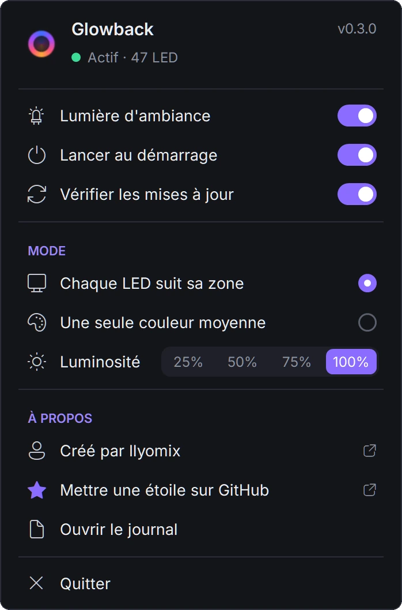
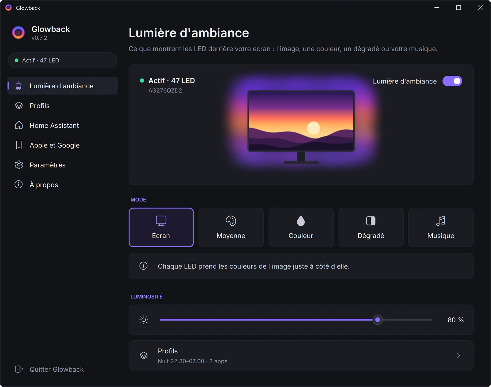
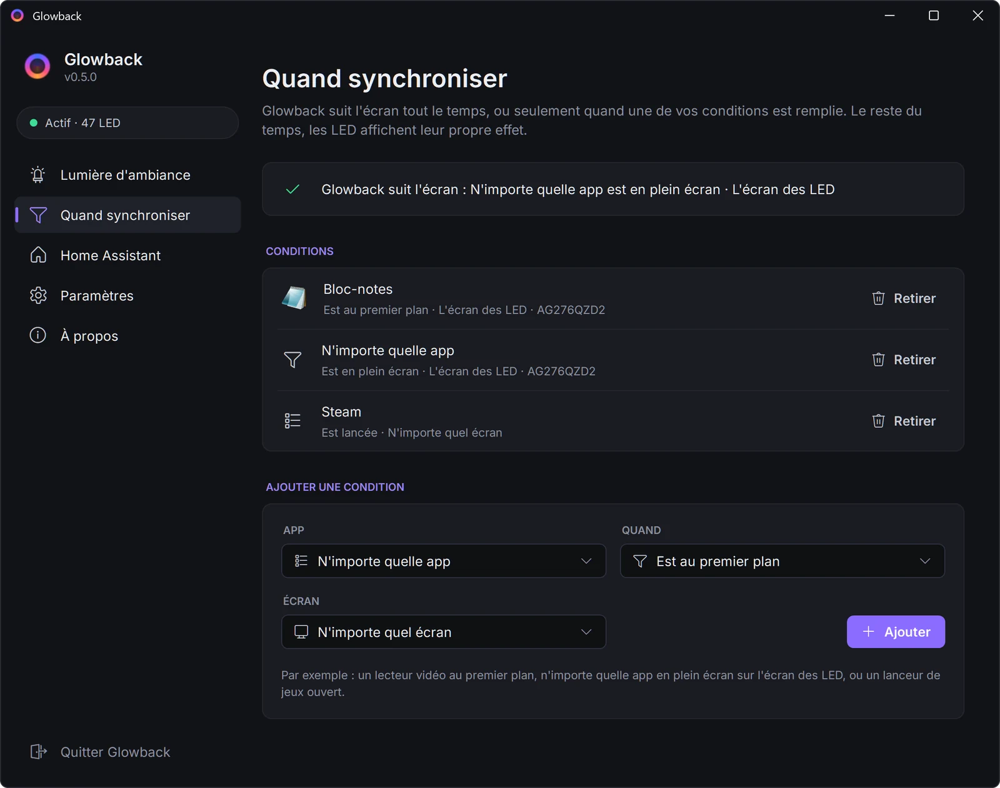
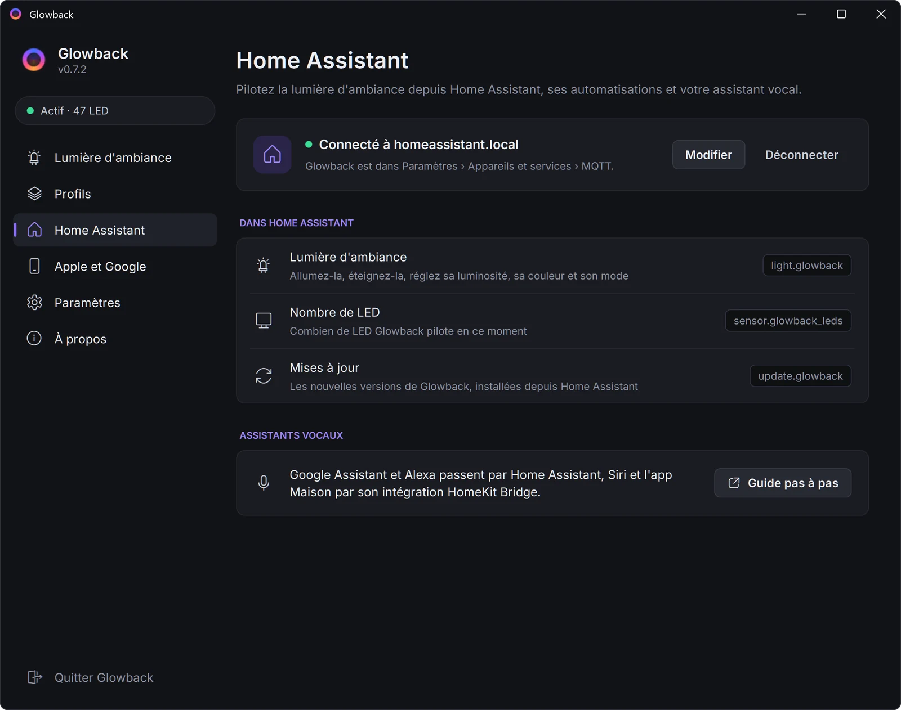
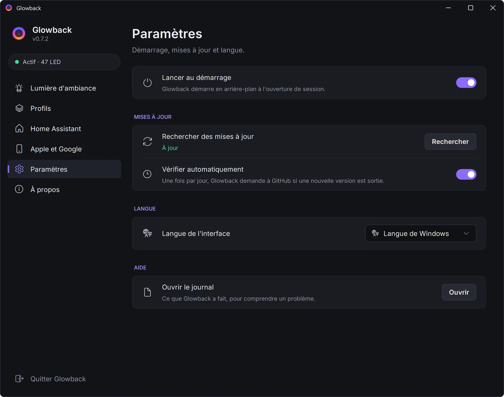
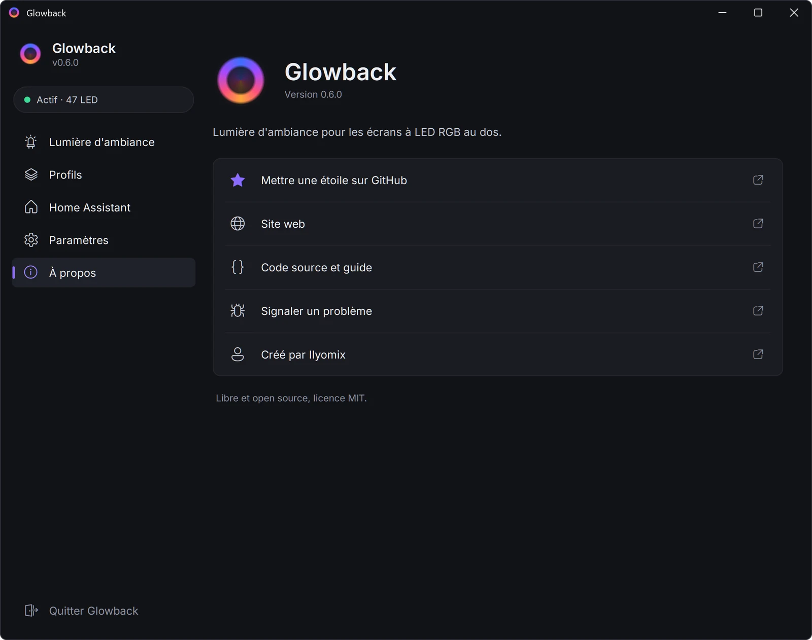
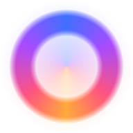

La lumière d’ambiance pour les LED RGB au dos de votre écran.
Glowback capture votre écran et donne à chaque LED derrière lui la couleur de l'image juste devant elle, en direct. Votre mur prolonge l'image.


Glowback devient une application
Lancez Glowback depuis le menu Démarrer et sa fenêtre s'ouvre. Fermez-la et Glowback continue en arrière-plan : double-cliquez sur son icône à côté de l'horloge pour la rouvrir, ou cliquez une fois pour le panneau rapide.





Comment ça marche
Trois étapes, trente fois par seconde, en une demi-milliseconde de CPU environ.
Capturer
La carte graphique fournit chaque nouvelle image (DXGI, HDR compris) et la réduit en une mini-grille de couleurs. Les bandes noires des films sont ignorées.
Associer
Chaque LED indique sa position physique. Glowback la projette sur le bord d'écran le plus proche, comme une TV Ambilight.
Éclairer
Les couleurs sont lissées, ravivées dans les scènes sombres et envoyées aux LED en USB. Rien ne quitte votre PC.
Tout ce qu'on attend d'une vraie application
Une zone par LED
Chaque LED suit sa partie de l'image, ou passez à une seule couleur moyenne.
Films, jeux, HDR
Vidéo et jeux en plein écran, bureau HDR, détection des bandes noires.
La synchro à vos conditions
Glowback peut suivre l'écran seulement quand une app choisie tourne, est au premier plan ou en plein écran. Le reste du temps, les LED gardent leur propre effet.
App Windows native
Sa propre fenêtre, un panneau rapide à côté de l'horloge, un installateur, le lancement au démarrage et des mises à jour vérifiées en un clic.
Parle votre langue
Français, anglais, espagnol, allemand, italien et portugais.
Ultra léger
Environ 0,5 ms de CPU par image. La version Python tient en un fichier, sans dépendance.
S'intègre à votre maison connectée
Glowback apparaît dans Home Assistant comme une lumière : vos tableaux de bord, vos automatisations et votre assistant vocal peuvent l'allumer, l'éteindre ou régler sa luminosité. Le panneau de Glowback et Home Assistant restent synchronisés.
Home Assistant
light.glowback
Allumé/éteint, luminosité et le mode en effet (Zones ou Average). Plus une entité de mise à jour pour voir et installer les nouvelles versions, et un capteur du nombre de LED.
Google Assistant
« Ok Google, mets Glowback à 50 % »
Via Home Assistant Cloud, ou la configuration manuelle de Home Assistant.
Alexa
« Alexa, éteins Glowback »
Via Home Assistant aussi : Home Assistant Cloud ou la configuration manuelle.
Siri et l'app Maison
« Dis Siri, allume Glowback »
Via l'intégration HomeKit Bridge de Home Assistant, avec allumé/éteint et luminosité. Maison ne gère pas les effets de lumière, donc pas de mode.
Se configure depuis le panneau
Installez l'application Mosquitto broker dans Home Assistant. Cliquez ensuite sur Home Assistant dans le panneau de Glowback et saisissez l'adresse, le port, l'utilisateur et le mot de passe.
Le client MQTT est intégré, et le mot de passe est chiffré pour votre compte Windows (DPAPI).
glowback --home-assistant mqtt://UTILISATEUR:MOTDEPASSE@HÔTE Guide pas à pas →Le panneau rapide, à côté de l'horloge
Un clic sur l'icône à côté de l'horloge ouvre le panneau rapide, un double-clic rouvre la fenêtre. Les réglages s'appliquent tout de suite, et le panneau reste ouvert pendant que vous ajustez.
- État en direct : actif, en pause, nombre de LED
- Ouvrir Glowback : la fenêtre à un clic
- Interrupteurs lumière d'ambiance et lancement au démarrage
- Quand synchroniser et Home Assistant, avec leur état d'un coup d'œil
- Chaque LED suit sa zone, ou une seule couleur moyenne
- Luminosité en un geste : 25, 50, 75 ou 100 %
- Mises à jour vérifiées en un clic, ou automatiquement chaque jour
Mon écran est-il compatible ?
Glowback n'est lié à aucune marque. Si l'un de ces cas est vrai, ça marche.
Éclairage dynamique de Windows
Votre écran apparaît dans Paramètres → Personnalisation → Éclairage dynamique. Glowback le pilote directement.
OpenRGB
Vos LED sont prises en charge par OpenRGB. Lancez son serveur SDK : Glowback les trouve tout seul.
Ni l'un ni l'autre ?
Collez un ruban LED derrière l'écran et pilotez-le avec une carte RP2040 à 5 $.
Lire le guide DIY (en anglais) →Testé à ce jour : AOC AGON PRO AG276QZD2 (47 LED). Signalez votre écran →
Questions
Quels écrans sont compatibles ?
Tout écran dont l'éclairage RGB arrière peut être contrôlé par l'Éclairage dynamique de Windows ou par OpenRGB. Lancez glowback --list, ou cherchez votre écran dans Paramètres → Personnalisation → Éclairage dynamique.
Faut-il désactiver quelque chose ?
Oui : désactivez l'Éclairage dynamique de Windows pour votre écran (Paramètres → Personnalisation → Éclairage dynamique), sinon Windows et Glowback se disputent les LED.
Windows dit avoir protégé mon PC. Est-ce sûr ?
L'installateur n'est pas encore signé, SmartScreen ne le connaît donc pas. Cliquez sur Informations complémentaires → Exécuter quand même. Le code source et chaque version compilée sont publics sur GitHub, et les mises à jour dans l'app sont vérifiées par empreinte SHA-256.
Ça marche en HDR, dans les jeux et les films en plein écran ?
Oui. La capture GPU gère les jeux plein écran, les lecteurs vidéo et le bureau HDR, et ignore les bandes noires. Les flux protégés par DRM sont en général masqués par Windows pour tous les outils de capture.
Peut-il suivre l'écran seulement en jeu ou devant un film ?
Oui. Dans la page Quand synchroniser, ajoutez des conditions comme VLC au premier plan, n'importe quelle app en plein écran sur l'écran des LED, ou Steam lancé. Glowback suit alors l'écran seulement quand l'une d'elles est remplie ; le reste du temps, les LED gardent leur propre effet. Les apps du Store comme Netflix et Disney+ sont reconnues, et les vérifications restent sur votre PC. En ligne de commande : glowback --sync-when foreground:vlc.exe.
Ça marche avec Siri, Google Assistant ou Alexa ?
Oui, via Home Assistant. Glowback y apparaît comme une lumière, par MQTT avec l'application Mosquitto broker de Home Assistant. Google Assistant et Alexa passent ensuite par Home Assistant Cloud ou par la configuration manuelle de Home Assistant. Siri et l'app Maison d'Apple passent par l'intégration HomeKit Bridge, avec allumé/éteint et luminosité : Maison ne gère pas les effets de lumière, donc pas de mode.
Comment le désinstaller ?
Paramètres → Applications → Applications installées → Glowback → Désinstaller. Les LED reprennent l'effet de l'appareil.

Votre mur fait partie de l'image.
Gratuit, open source, prêt en une minute.